Season Flow
1年の主なイベント
4月｜春六（六大学春季リーグ）
六大学で行う春の大会です🌸
 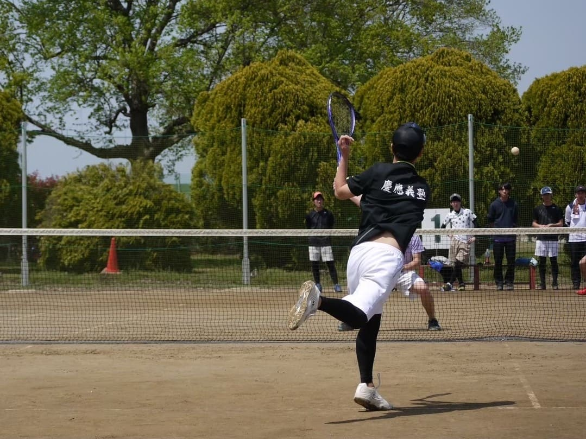
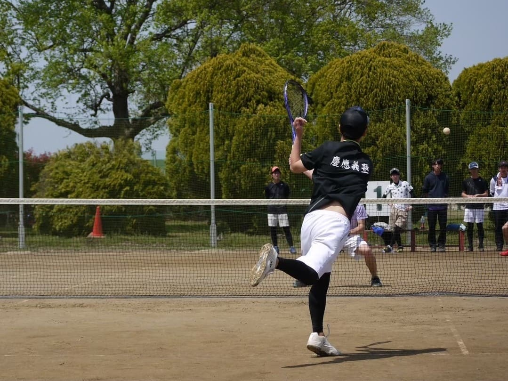
5月｜確定新歓 & 新歓BBQ
確定新歓で新入生の入サーが確定します！新歓BBQではゆったり交流して打ち解けます🎪


 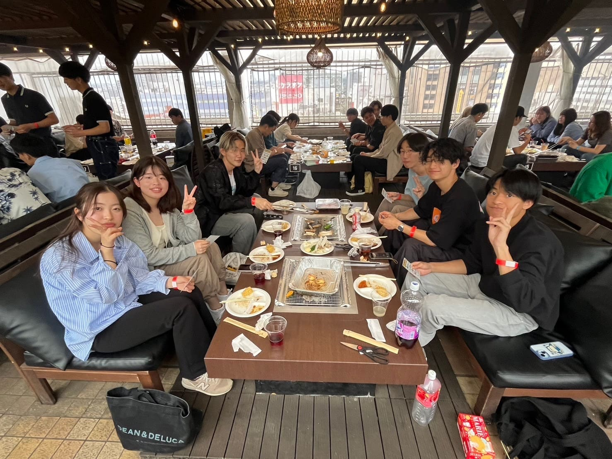
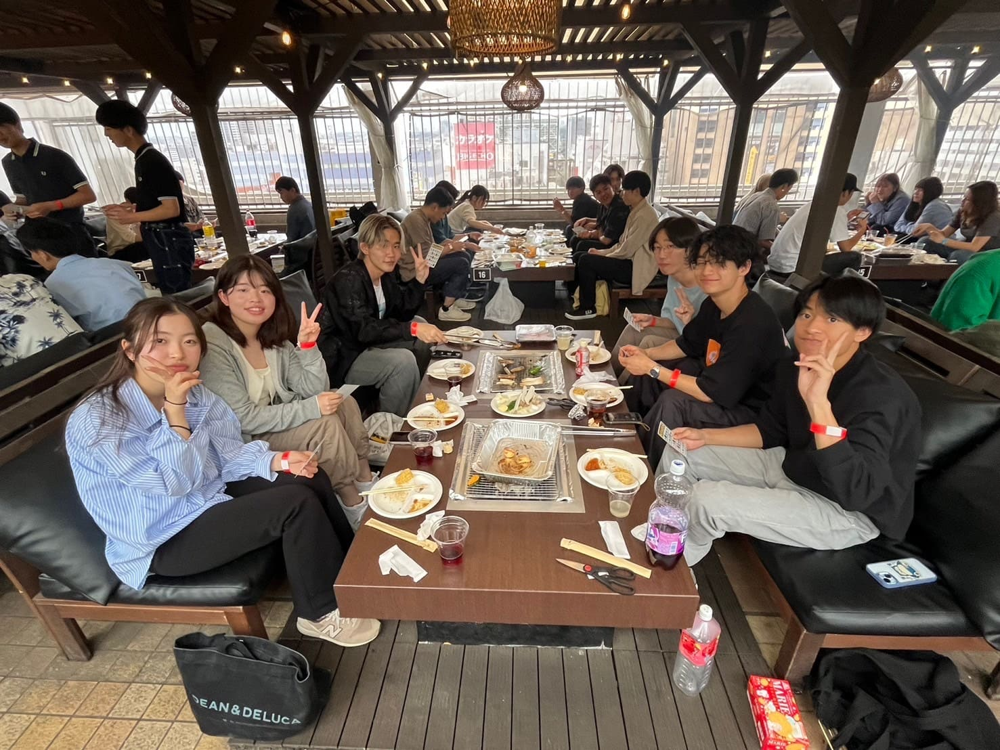
6月｜春部内戦
色別のチームに分かれて戦います👕
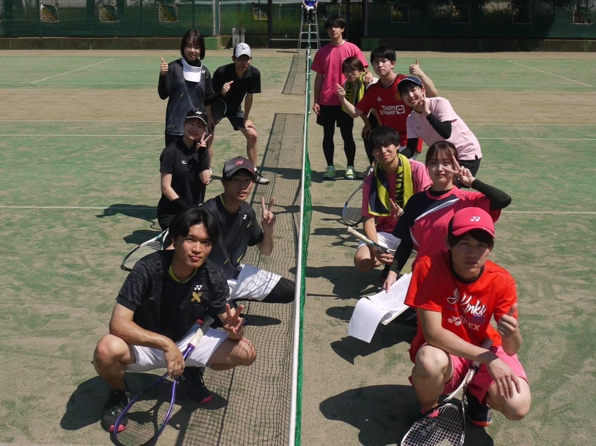

7月｜曜日練
毎週月～金で練習があります🌞
 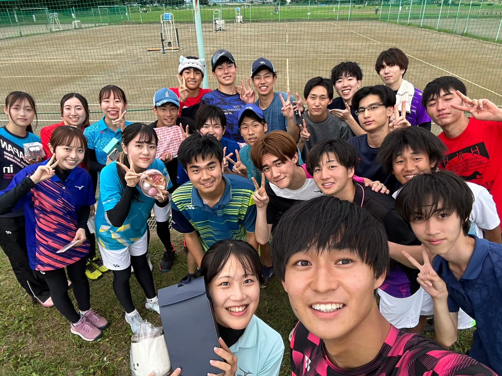
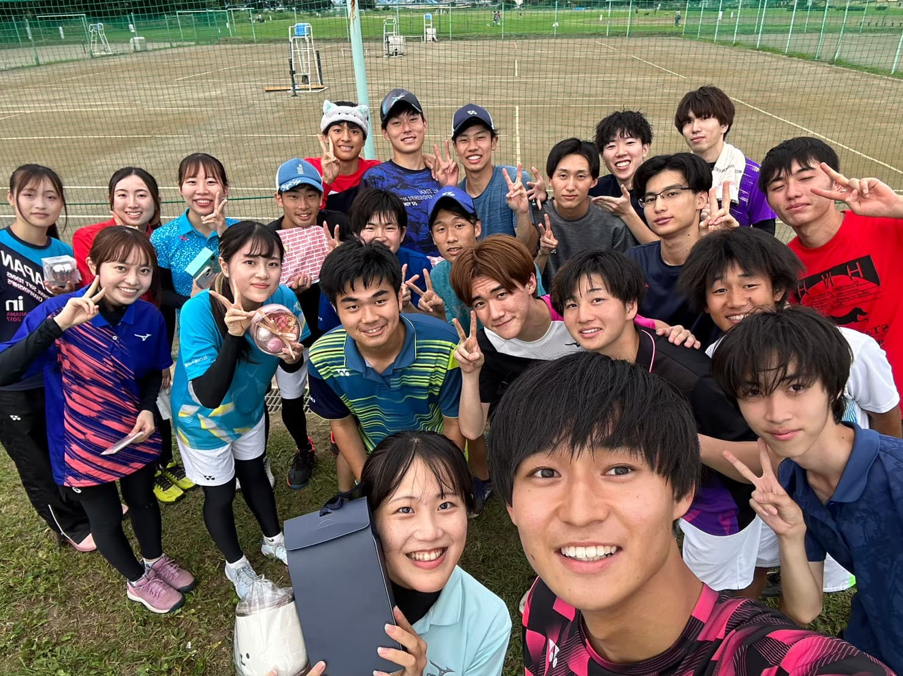
8月｜全日
全国の学生が集まる大会です🌟


9月｜夏合宿
山中湖で合宿を行います🎆 BBQも楽しみます🍖


10月｜秋六 & 慶應オープン
六大学で行う秋の大会です🎃 慶應オープンでは体育会、塾高、志木高などを相手に戦います🔥


11月｜秋部内戦
色別のチームに分かれて戦います👚
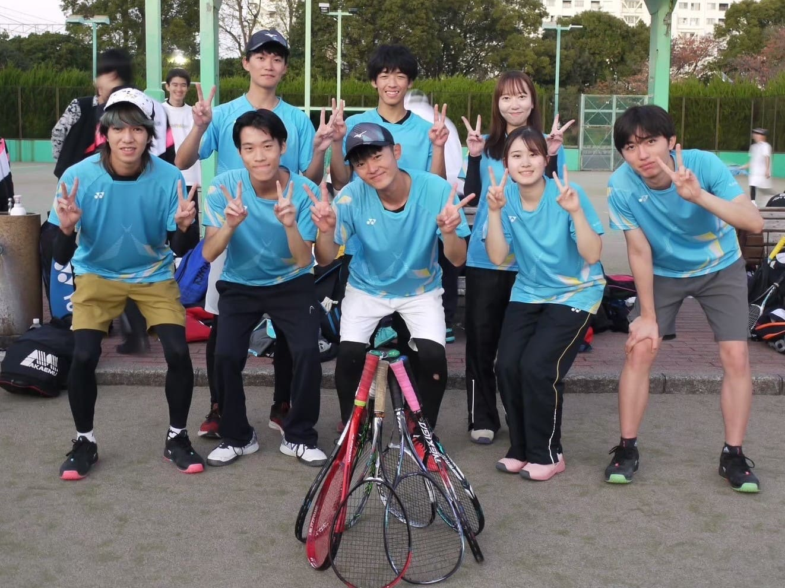

12月｜クリスマス会 & 総会
楽しい企画を行います🎅総会では1年の振り返りと幹部の交代をします
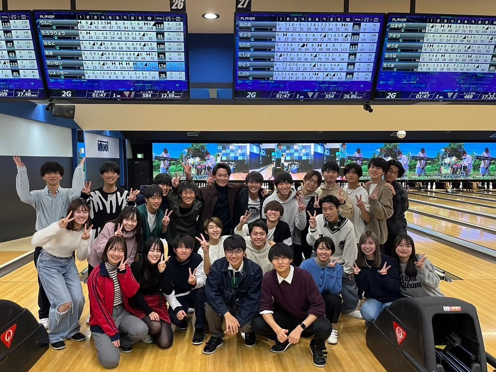


2月｜追い出しコンパ
卒業される４年生方とのコンパです
 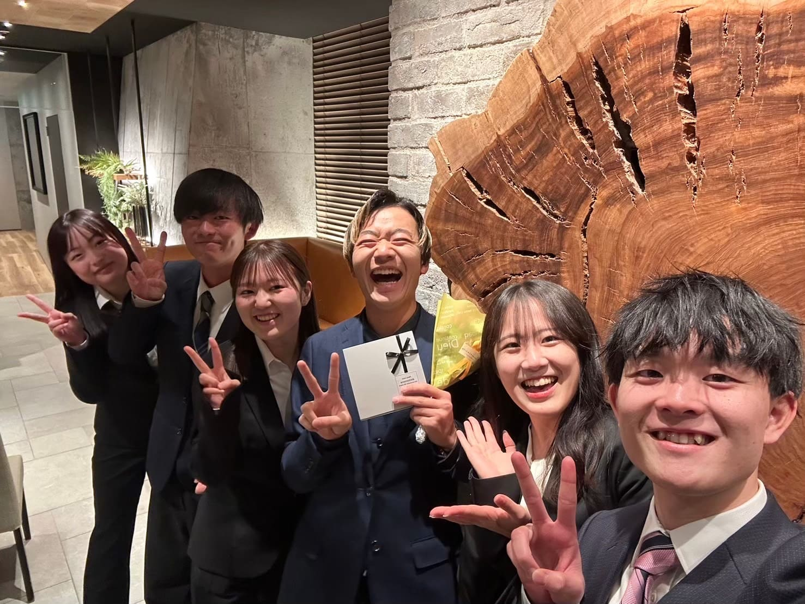
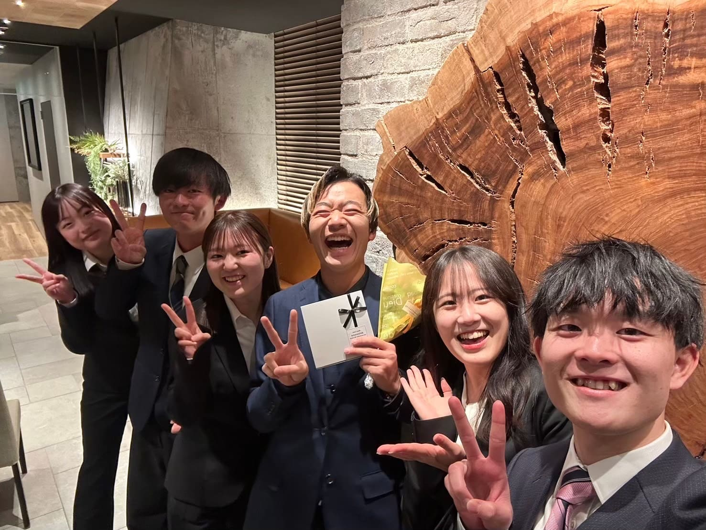
3月｜春合宿
白子で合宿を行います